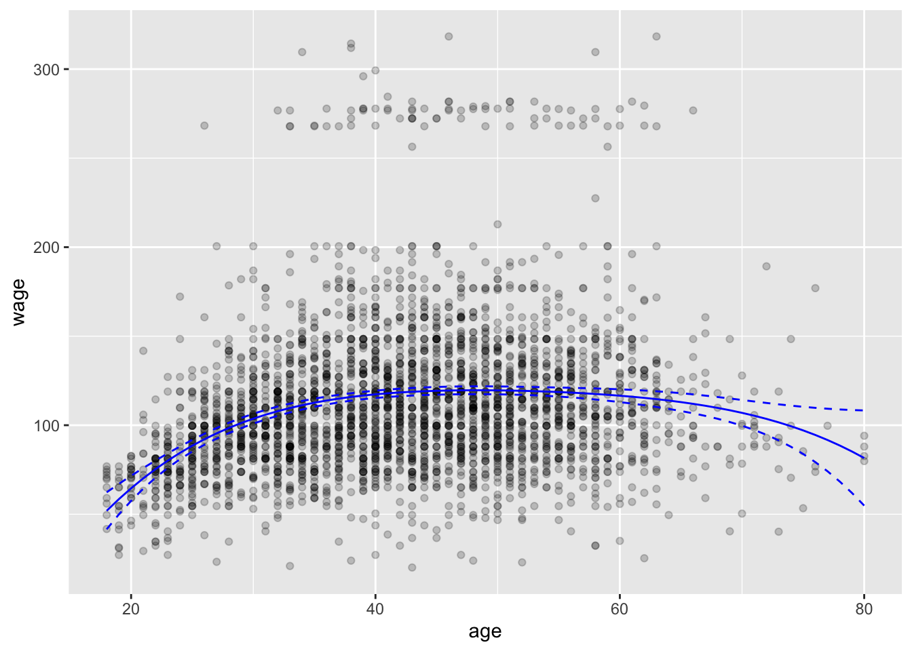
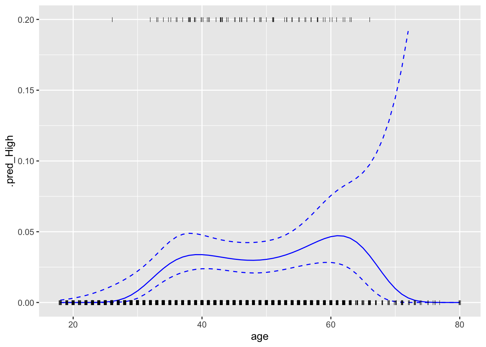

7 Moving Beyond Linearity
## Registered S3 method overwritten by 'tune':
## method from
## required_pkgs.model_spec parsnip## ── Attaching packages ────────────────────────────────────── tidymodels 0.1.3 ──## ✓ broom 0.7.6 ✓ recipes 0.1.16
## ✓ dials 0.0.9 ✓ rsample 0.0.9
## ✓ dplyr 1.0.6 ✓ tibble 3.1.1
## ✓ ggplot2 3.3.3 ✓ tidyr 1.1.3
## ✓ infer 0.5.4 ✓ tune 0.1.5
## ✓ modeldata 0.1.0 ✓ workflows 0.2.2
## ✓ parsnip 0.1.5.9002 ✓ workflowsets 0.0.2
## ✓ purrr 0.3.4 ✓ yardstick 0.0.8## ── Conflicts ───────────────────────────────────────── tidymodels_conflicts() ──
## x purrr::discard() masks scales::discard()
## x dplyr::filter() masks stats::filter()
## x dplyr::lag() masks stats::lag()
## x recipes::step() masks stats::step()
## • Use tidymodels_prefer() to resolve common conflicts.7.1 Polynomial Regression and Step Functions
lm_spec <- linear_reg() %>%
set_engine("lm") %>%
set_mode("regression")
lm_fit <- fit(lm_spec, wage ~ poly(age, 4), data = Wage)
tidy(lm_fit)## # A tibble: 5 x 5
## term estimate std.error statistic p.value
## <chr> <dbl> <dbl> <dbl> <dbl>
## 1 (Intercept) 112. 0.729 153. 0
## 2 poly(age, 4)1 447. 39.9 11.2 1.48e-28
## 3 poly(age, 4)2 -478. 39.9 -12.0 2.36e-32
## 4 poly(age, 4)3 126. 39.9 3.14 1.68e- 3
## 5 poly(age, 4)4 -77.9 39.9 -1.95 5.10e- 2
rec_poly <- recipe(wage ~ age, data = Wage) %>%
step_poly(age, degree = 4)
poly_wf <- workflow() %>%
add_model(lm_spec) %>%
add_recipe(rec_poly)
poly_fit <- fit(poly_wf, data = Wage)
tidy(poly_fit)## # A tibble: 5 x 5
## term estimate std.error statistic p.value
## <chr> <dbl> <dbl> <dbl> <dbl>
## 1 (Intercept) 112. 0.729 153. 0
## 2 age_poly_1 447. 39.9 11.2 1.48e-28
## 3 age_poly_2 -478. 39.9 -12.0 2.36e-32
## 4 age_poly_3 126. 39.9 3.14 1.68e- 3
## 5 age_poly_4 -77.9 39.9 -1.95 5.10e- 2
poly(1:4, degree = 2, raw = TRUE)## 1 2
## [1,] 1 1
## [2,] 2 4
## [3,] 3 9
## [4,] 4 16
## attr(,"degree")
## [1] 1 2
## attr(,"class")
## [1] "poly" "matrix"
poly(1:4, degree = 2, raw = FALSE)## 1 2
## [1,] -0.6708204 0.5
## [2,] -0.2236068 -0.5
## [3,] 0.2236068 -0.5
## [4,] 0.6708204 0.5
## attr(,"coefs")
## attr(,"coefs")$alpha
## [1] 2.5 2.5
##
## attr(,"coefs")$norm2
## [1] 1 4 5 4
##
## attr(,"degree")
## [1] 1 2
## attr(,"class")
## [1] "poly" "matrix"
rec_poly <- recipe(wage ~ age, data = Wage) %>%
step_poly(age, degree = 4, options = list(raw = TRUE))
poly_wf <- workflow() %>%
add_model(lm_spec) %>%
add_recipe(rec_poly)
raw_poly_fit <- fit(poly_wf, data = Wage)
tidy(raw_poly_fit)## # A tibble: 5 x 5
## term estimate std.error statistic p.value
## <chr> <dbl> <dbl> <dbl> <dbl>
## 1 (Intercept) -184. 60.0 -3.07 0.00218
## 2 age_poly_1 21.2 5.89 3.61 0.000312
## 3 age_poly_2 -0.564 0.206 -2.74 0.00626
## 4 age_poly_3 0.00681 0.00307 2.22 0.0264
## 5 age_poly_4 -0.0000320 0.0000164 -1.95 0.0510
age_range <- tibble(age = seq(min(Wage$age), max(Wage$age)))
regression_lines <- bind_cols(
augment(poly_fit, new_data = age_range),
predict(poly_fit, new_data = age_range, type = "conf_int")
)
Wage %>%
ggplot(aes(age, wage)) +
geom_point(alpha = 0.2) +
geom_line(aes(y = .pred), data = regression_lines, color = "blue") +
geom_line(aes(y = .pred_lower), data = regression_lines,
linetype = "dashed", color = "blue") +
geom_line(aes(y = .pred_upper), data = regression_lines,
linetype = "dashed", color = "blue")
Wage <- Wage %>%
mutate(high = factor(wage > 250,
levels = c(TRUE, FALSE),
labels = c("High", "Low")))
lr_spec <- logistic_reg() %>%
set_engine("glm") %>%
set_mode("classification")
rec_poly <- recipe(high ~ age, data = Wage) %>%
step_poly(age, degree = 4)
poly_wf <- workflow() %>%
add_model(lr_spec) %>%
add_recipe(rec_poly)
poly_fit <- fit(poly_wf, data = Wage)
predict(poly_fit, new_data = Wage)## # A tibble: 3,000 x 1
## .pred_class
## <fct>
## 1 Low
## 2 Low
## 3 Low
## 4 Low
## 5 Low
## 6 Low
## 7 Low
## 8 Low
## 9 Low
## 10 Low
## # … with 2,990 more rows
predict(poly_fit, new_data = Wage, type = "prob")## # A tibble: 3,000 x 2
## .pred_High .pred_Low
## <dbl> <dbl>
## 1 0.00000000983 1.00
## 2 0.000120 1.00
## 3 0.0307 0.969
## 4 0.0320 0.968
## 5 0.0305 0.970
## 6 0.0352 0.965
## 7 0.0313 0.969
## 8 0.00820 0.992
## 9 0.0334 0.967
## 10 0.0323 0.968
## # … with 2,990 more rows
predict(poly_fit, new_data = Wage, type = "conf_int")## # A tibble: 3,000 x 4
## .pred_lower_High .pred_upper_High .pred_lower_Low .pred_upper_Low
## <dbl> <dbl> <dbl> <dbl>
## 1 2.22e-16 0.00166 0.998 1
## 2 1.82e- 6 0.00786 0.992 1.00
## 3 2.19e- 2 0.0428 0.957 0.978
## 4 2.31e- 2 0.0442 0.956 0.977
## 5 2.13e- 2 0.0434 0.957 0.979
## 6 2.45e- 2 0.0503 0.950 0.975
## 7 2.25e- 2 0.0434 0.957 0.977
## 8 3.01e- 3 0.0222 0.978 0.997
## 9 2.39e- 2 0.0465 0.953 0.976
## 10 2.26e- 2 0.0458 0.954 0.977
## # … with 2,990 more rows
regression_lines <- bind_cols(
augment(poly_fit, new_data = age_range, type = "prob"),
predict(poly_fit, new_data = age_range, type = "conf_int")
)
regression_lines %>%
ggplot(aes(age)) +
ylim(c(0, 0.2)) +
geom_line(aes(y = .pred_High), color = "blue") +
geom_line(aes(y = .pred_lower_High), color = "blue", linetype = "dashed") +
geom_line(aes(y = .pred_upper_High), color = "blue", linetype = "dashed") +
geom_jitter(aes(y = (high == "High") / 5), data = Wage,
shape = "|", height = 0, width = 0.2)## Warning: Removed 8 row(s) containing missing values (geom_path).
rec_cut <- recipe(high ~ age, data = Wage) %>%
step_discretize(age, num_breaks = 4)
cut_wf <- workflow() %>%
add_model(lr_spec) %>%
add_recipe(rec_cut)
cut_fit <- fit(cut_wf, data = Wage)
predict(cut_fit, new_data = Wage)## # A tibble: 3,000 x 1
## .pred_class
## <fct>
## 1 Low
## 2 Low
## 3 Low
## 4 Low
## 5 Low
## 6 Low
## 7 Low
## 8 Low
## 9 Low
## 10 Low
## # … with 2,990 more rows
predict(cut_fit, new_data = Wage, type = "prob")## # A tibble: 3,000 x 2
## .pred_High .pred_Low
## <dbl> <dbl>
## 1 0.00667 0.993
## 2 0.00667 0.993
## 3 0.0343 0.966
## 4 0.0343 0.966
## 5 0.0343 0.966
## 6 0.0356 0.964
## 7 0.0343 0.966
## 8 0.00667 0.993
## 9 0.0290 0.971
## 10 0.0356 0.964
## # … with 2,990 more rows
predict(cut_fit, new_data = Wage, type = "conf_int")## # A tibble: 3,000 x 4
## .pred_lower_High .pred_upper_High .pred_lower_Low .pred_upper_Low
## <dbl> <dbl> <dbl> <dbl>
## 1 0.00278 0.0159 0.984 0.997
## 2 0.00278 0.0159 0.984 0.997
## 3 0.0238 0.0492 0.951 0.976
## 4 0.0238 0.0492 0.951 0.976
## 5 0.0238 0.0492 0.951 0.976
## 6 0.0240 0.0526 0.947 0.976
## 7 0.0238 0.0492 0.951 0.976
## 8 0.00278 0.0159 0.984 0.997
## 9 0.0192 0.0436 0.956 0.981
## 10 0.0240 0.0526 0.947 0.976
## # … with 2,990 more rows7.2 Splines
rec_spline <- recipe(wage ~ age, data = Wage) %>%
step_bs(age, options = list(knots = 25, 40, 60))
spline_wf <- workflow() %>%
add_model(lm_spec) %>%
add_recipe(rec_spline)
cut_fit <- fit(spline_wf, data = Wage)
predict(cut_fit, new_data = Wage)## # A tibble: 3,000 x 1
## .pred
## <dbl>
## 1 58.7
## 2 84.3
## 3 120.
## 4 120.
## 5 120.
## 6 119.
## 7 120.
## 8 102.
## 9 119.
## 10 120.
## # … with 2,990 more rows
predict(cut_fit, new_data = Wage, type = "conf_int")## # A tibble: 3,000 x 2
## .pred_lower .pred_upper
## <dbl> <dbl>
## 1 50.8 66.6
## 2 80.7 87.8
## 3 119. 122.
## 4 118. 122.
## 5 118. 122.
## 6 116. 121.
## 7 118. 122.
## 8 99.8 104.
## 9 117. 121.
## 10 117. 122.
## # … with 2,990 more rows
regression_lines <- bind_cols(
augment(cut_fit, new_data = age_range),
predict(cut_fit, new_data = age_range, type = "conf_int")
)
Wage %>%
ggplot(aes(age, wage)) +
geom_point(alpha = 0.2) +
geom_line(aes(y = .pred), data = regression_lines, color = "blue") +
geom_line(aes(y = .pred_lower), data = regression_lines,
linetype = "dashed", color = "blue") +
geom_line(aes(y = .pred_upper), data = regression_lines,
linetype = "dashed", color = "blue")